What is attribution modeling?
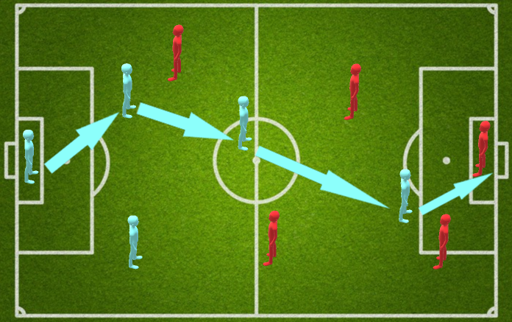 Soccer field exampleWhen a goal happens in soccer, which player should get how much credit of it?
- Should striker get the most credit for the goal?
- Should last person who pass the ball to the striker get the most credit for the goal?
- Should first person who initiated that rythm of passes get the most credit of the goal?
- Should every person who passes the ball get equal credit?
- Should the latter ones get more credit of the goal?
In marketing we are facing the similar kind of problem, that when the conversion happens. Then how much credit should be given to which channel in marketing?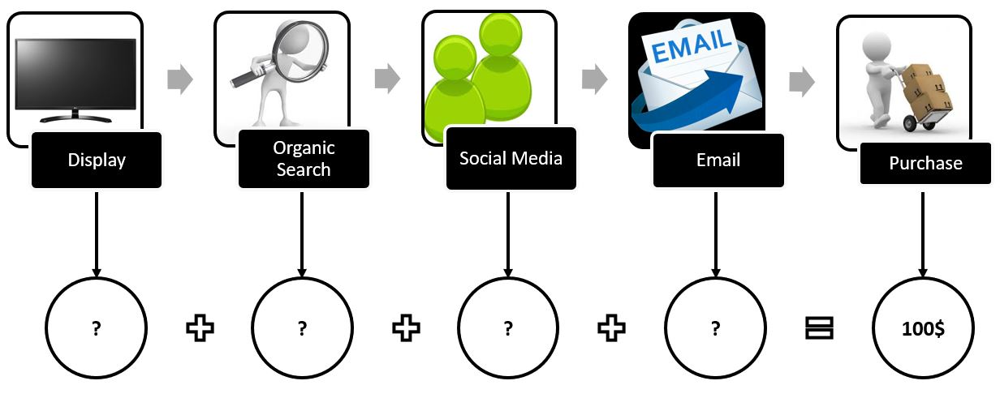 A customer's journey for landing on website
Why we need attribution model?
In today's world every company is spending big amount of their budget on marketing
- To gauge the effectiveness of channels
- To measure impact of communication with customers
- To determine ROI
- To decide which actions to take
Types of attribution models:
- Rule based attribution model
- First Click Attribution Model
This is the closest proxy we have for "how did they hear about us in the first place?"
This is useful if you need to know which keywords genuinely helped make you known to the user.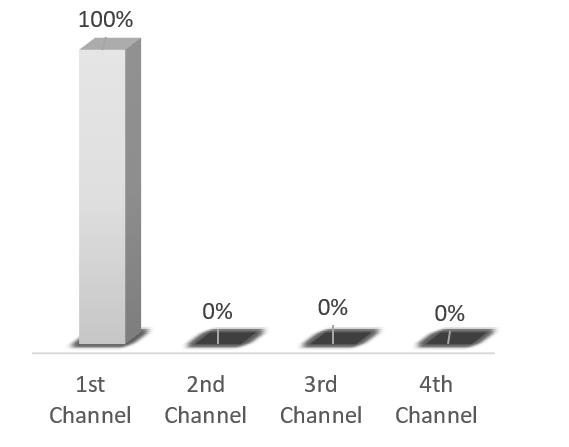 Pros: - Easy to implement
- Helps to know New Customer Acquisition Channels
- Insight into drive awareness campaigns
- No influence of subsequent touches
- Too much credit to lead gen programs
- Last Click Attribution Model
Most useful when the final touchpoint really was the deciding one, e.g. for impulse purchases or very price-sensitive decisions.

Pros: - Easy to implement
- Insights into drive conversion campaigns
- No influence of prior touches
- Too much credit to converting campaigns
- Equal weight Attribution Model
Gives equal weight to every touchpoint. Doesn't matter when that click is happening.
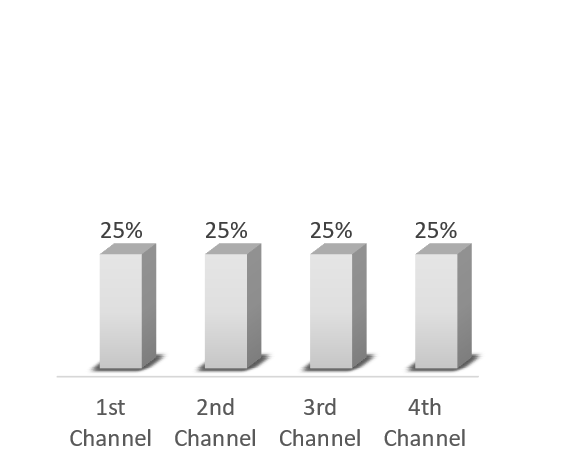 Pros: - No-fighting over who gets credit
- Helpful for longer revenue cycles with many clicks
- Low-impact touchpoints gets high credit
- No importance to high impact touchpoints
- Time Decay Attribution Model
“Latter you are in click-chain, more credit you will get”. If users can't remember about who showed up on the first few clicks, than those were probably worth less in final decision.
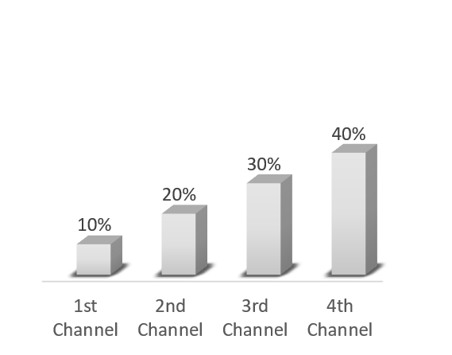 Pros: - Focused on all touchpoints
- Helpful for longer revenue cycles with many clicks
- Artificially inflate importance to latter channels
- Low-credit to acquisition channels
- Positional-Rule based Attribution Model
“What make you aware and What make you purchase from us?"
If you needed to get on a shortlist but you don't care if the user interacted with you again until they made their final decision, this model replicates that level of credit.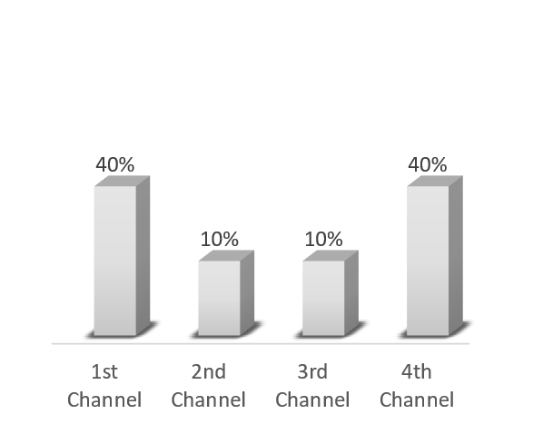 Pros: - High credit for acquiring and converting channels
- Helpful for longer revenue cycles with many clicks
- Less influence for middle channels
- Data-driven attribution model
- Helps to know proper attribution to each channel
- No set of rules to skew data
- Less guess work
- Better decisions
- Not Easy to implement
- Require statistical knowledge
- Require a lot of data to know statistical validity
- Shapely Attribution Model
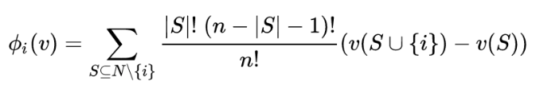
How much value does each channel have?
Or in other words
How much value a channel brings to already existing list of channels?lets consider a customer journeys
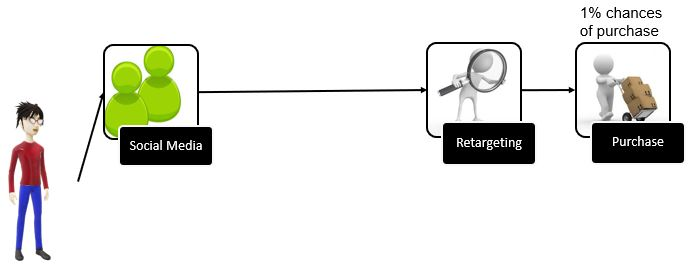In this customer journey customer has 1% chances of making a purchase.
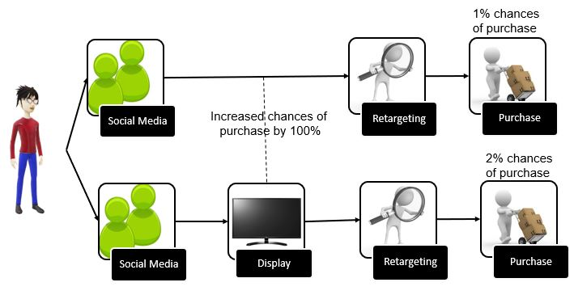Now when we add display to the customer journey customer has 2% chances of making a purchase. Means there are 100% more chances of making a purchase when we have display as a channel.
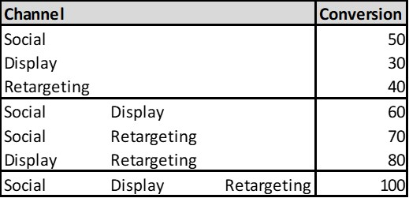 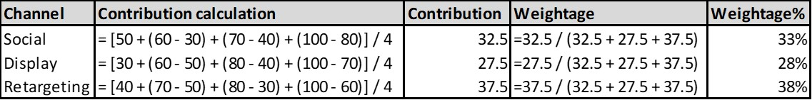 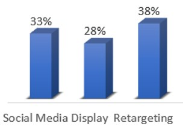 - Markov-chain Attribution Model
"Proper distribution to each channel"
| 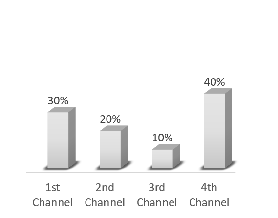 |
Pros:
|
|---|